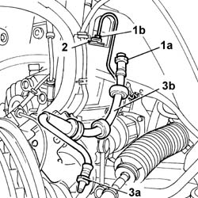

3330E10 ONE FLEXIBLE PIPE TO FRONT BRAKE CALIPER
- Path
- Procedures > 33 BRAKES > 3330 HYDRAULIC BRAKING SYSTEM > 3330E HYDRAULIC BRAKE SYSTEM PIPES > 3330E10 ONE FLEXIBLE PIPE TO FRONT BRAKE CALIPER
- Kind
- repair procedure (removal / refitting; the operation number is the code)
- Applies to
- all engines; all production periods
- Interactive page
- https://sloeber94.github.io/elrnDB-lThss/en/#/156244
Applies to: all engines; all production periods
 Removing
Removing
 Refitting
Refitting- Position the vehicle on a lift.
See in Op. 4450B10 Front WHEEL (one) - R.R.
1. Undo the connector for the flexible section (1a) to the rigid section (1b) of the front caliper.
2. Remove the fastening spring and release the flexible section of the pipe from the rigid section.
3. Undo the connector (3a) from the brake caliper, then remove the flexible pipe (3b) to the front brake caliper.

Applies to: all engines; all production periods
Refitting
Removing- Fit the flexible pipe tightening the connectors to the front brake caliper and to the rigid section.
- Tighten the connectors to torque.
 | Value - daNm | Fastening | Component | Ø |
|---|---|---|---|---|
. | 1.4 | Connector | BRAKING SYSTEM PIPE BRAKES | M10 |
- Secure the fastening spring to the rigid section.
- Secure the brake pipe to the mounting on the mounting bracket.
- [0010T64]
- [0010T65]
See in Op. 4450B10 Front WHEEL (one) - R.R.
- Remove the vehicle from the lift.